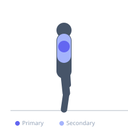
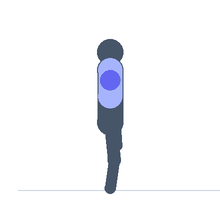

Exercise guide / Dual Landmine Lateral Raise
Dual Landmine Lateral Raise
The dual landmine lateral raise uses two landmine setups simultaneously, one on each side, raising both arms laterally at the same time. The bilateral version applies the constant-arc loading of the landmine to both sides simultaneously, training medial deltoids with strict form and removing the possibility of compensating with one side. It is typically performed in front-facing configuration with the bars angled outward.
Primary muscles
deltoid lateral
Secondary muscles
trapezius upper
Stabilizers
erector spinae
Equipment
No Equipment (Bodyweight)
Optional
Hyperextension Bench (45°)


Starting position
- Set up two landmine units with bars angled outward from the floor. Stand between them and hold each bar end in the corresponding hand, arms at sides.
Setup
- Ensure both landmine setups are at equal heights and their loaded ends are at the same level. Light loading on each bar.
Steps
- Step 1: Begin with both arms at sides, bar ends at hip level.
- Step 2: Raise both arms simultaneously outward and upward to shoulder height.
- Step 3: Hold 1 second at peak.
- Step 4: Lower both arms simultaneously under control.
- Step 5: Repeat for desired reps.
Coaching cues
- Both arms move in sync
- Lead with the elbows — slight bend
- Lower slowly — 3 full seconds
Breathing
- Exhale raising. Inhale lowering.
Range of motion
- Arms at sides to shoulder height on both sides simultaneously.
Tempo
- 2-1-3-0
Common mistakes
- One bar going higher than the other — control the symmetry
- Shrugging to compensate for heavy load — use lighter bars
Safety
- Requires access to two landmine units — plan setup before beginning
- Light load on each bar
Training
- hypertrophy: 10–15 reps
- hypertrophy: 3–4 sets
- Rest: {'hypertrophy': 90}